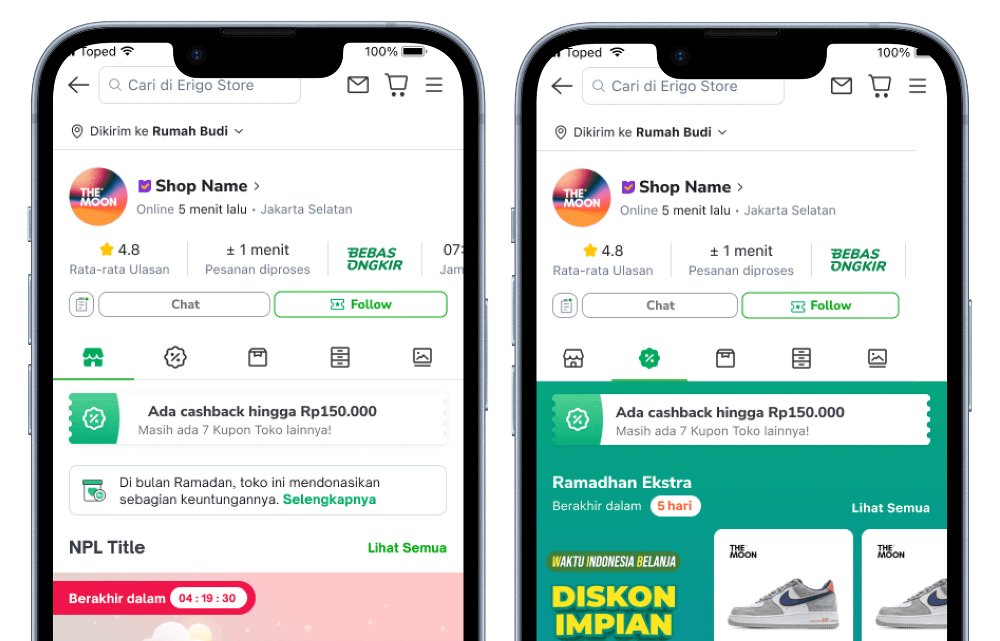
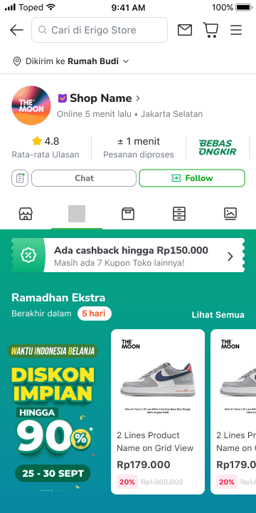
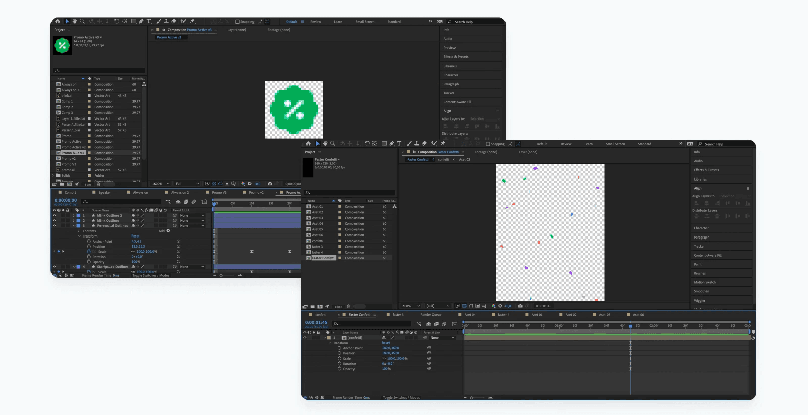
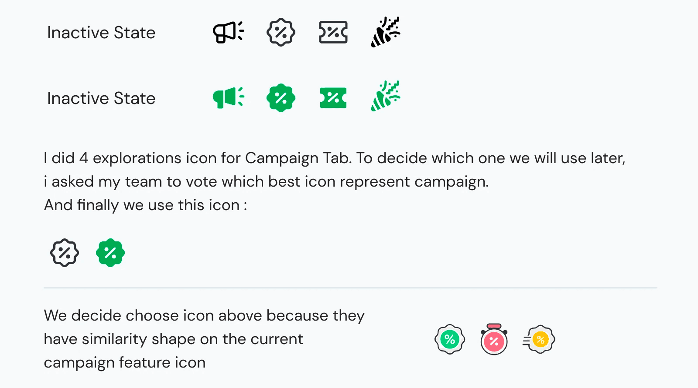
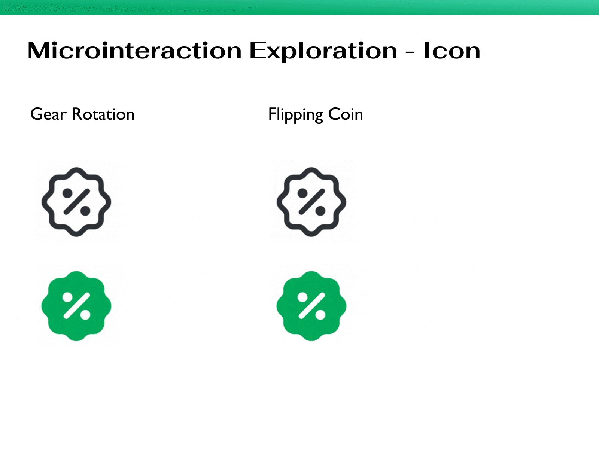
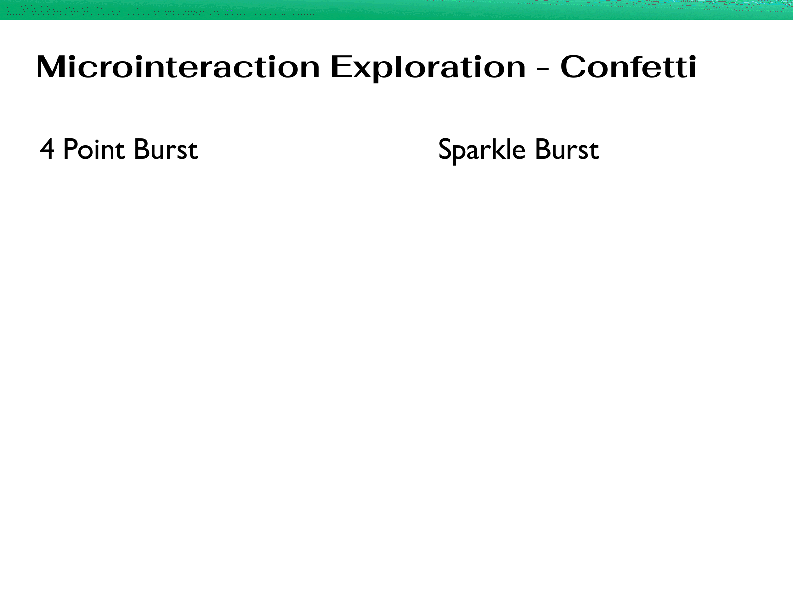
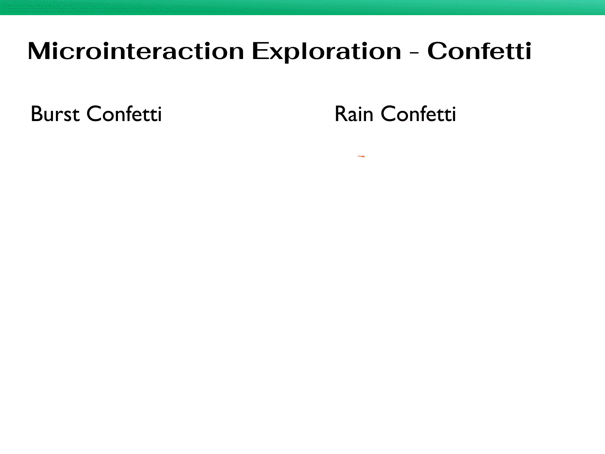
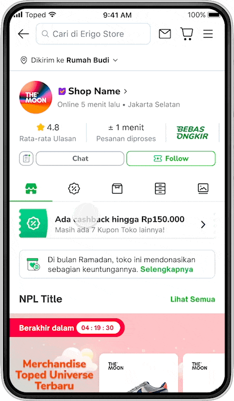
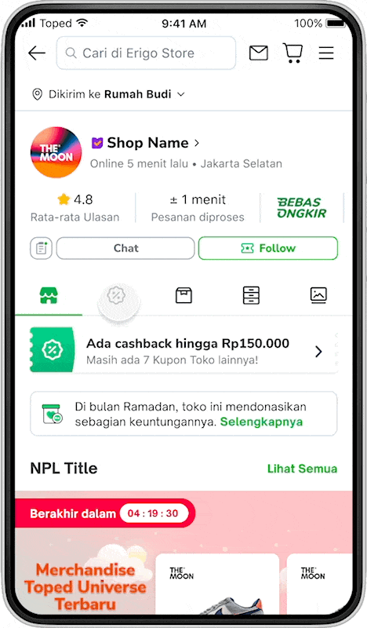

Discovery
Context
Tokopedia runs ~200 campaigns per week, over 600 per month spanning multiple categories and value propositions. When executed well, campaigns are powerful drivers of traffic and conversions. The challenge: ensuring a consistently great experience for users browsing campaigns end to end.
Scope Project
I was tasked with improving the festivity of the campaign tab to making the shop campaign experience feel more celebratory and engaging.

How Might We
How might we make the campaign tab feel more festive?
Ideation
Animation Tools
I used After Effects to craft the icon and confetti animations, then converted them to .json files using the Lottie plugin for seamless developer handoff.

Design Exploration
Explore Campaign Tab Icon

Micro Interaction Exploration - Tab Icon

Micro Interaction Exploration - Confetti Campaign


Preview with Prototype


Final Design & Takeaways
After rounds of review and team voting, we selected the Flipping Icon animation for the campaign tab and the Rain Confetti animation for the celebration effect.
Design Impact
The campaign tab launched on August 25 during Tokopedia's Anniversary. The confetti animation received strong user praise and was adopted by other teams across Tokopedia. Key metrics post-launch:
Designed & Developed by Randy Varianda